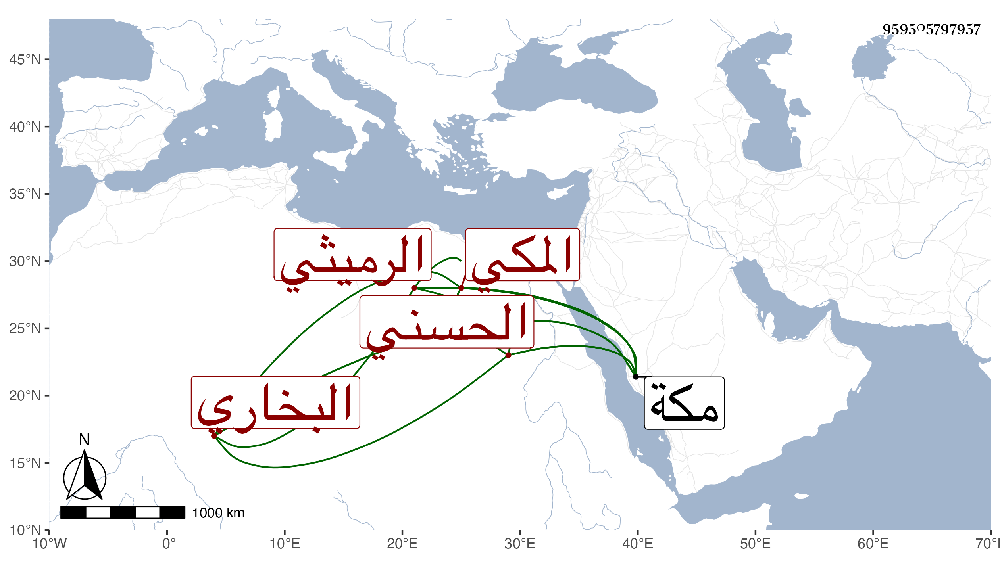

0902Sakhawi.DawLamic.ITO20230111-ara1.EIS1600.959505797957
Biography ID: 959505797957
238
عبد الله بن محمد بن محمد بن محمد العفيف ابن إمام الحنفية وشيخ الباسطية والخلجية الشمس بن القطب بن السراج الحسني الرميثي البخاري الأصل المكي الآتي أبوه . ولد في جمادى الثانية سنة اثنتين وسبعين بمكة وأمه أم ولد نشأ بمكة في كنف أبيه فأخذ عنه وقرأ علي سنة ست وثمانين المشارق للصغاني وبعض المشتبه لشيخنا ولازمني في سماع أشياء وصلى في تلك الأيام بالناس التراويح بالمقام الحنفي وربما أم في غيرها ثم أم بعد ذلك بل درس في العربية وغيرها ومن شيوخه القاضي أبو السعود وكذا أخذ عن المولى عبد العزيز في شرح العقائد والمختصر وغير ذلك كشرح الشمسية وجود القرآن فأحسن ، وصاهر نجم الدين المالكي على ابنته واتفق موت أبيه ليلة السماط فعاد الناس من المعلى إلى حضور السماط ثم قرأ علي في سنة سبع وتسعين الترغيب للمنذري وغير ذلك بل سمع مني تأليفي في المولد النبوي بمحله وفي السنة قبلها تأليف العراقي فيه أيضا ولازمني في سماع التذكرة للقرطبي وغيرها وتزايدت فضيلته وبراعته لذكائه وفهمه مع عقل وأدب واحتمال كان الله له .
